- Overview
- Creating Tasks
- Configuring Tasks
- Task Definition
- Task Designation Rules
- Cyclical Assignment
- Manual Assignment
- Value Based Assignment
- Reports To
- Self Service
- Self Service Value Based Assignment
- Task Timing Controls
- Task Permissions
- Task Case Labels
- Task Notifications
- Assigning Users to Tasks
- Assigning Steps to Tasks
Overview
The first step in creating a Process is to define the tasks. In ProcessMaker a task is a logical group of sequential steps, sharing a common goal. Tasks can be assigned to different users or groups of users, so that a process can be used to coordinate the activities of different people or groups in an organization.
Creating Tasks
To create a task, right click on the a blank area on the process map and select the option "Add Task" from the dropdown menu. The task will be added to the ProcessMap at the location of the mouse pointer.
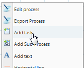
The task can be moved on the map by clicking on it and dragging while holding down on the mouse.
To modify a task, right click on the task to select an option from the Task menu:
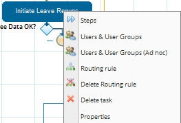
 Steps: In ProcessMaker a step is a piece of work that forms a clearly defined action within a task. Select this option to add a step to the task. See the section Defining Steps.
Steps: In ProcessMaker a step is a piece of work that forms a clearly defined action within a task. Select this option to add a step to the task. See the section Defining Steps. Users & User Groups: Select this option to assign the task to user(s) or group(s), who will have permission to access and fulfill the task. See the section Assigning Users to Tasks.
Users & User Groups: Select this option to assign the task to user(s) or group(s), who will have permission to access and fulfill the task. See the section Assigning Users to Tasks.- Users & User Groups (Adhoc): Select this option to assign user(s) or group(s) to a task on an ad hoc basis. The normally assigned users to a task can reassign the case to any user or group who has been assigned ad hoc. See the section Assigning Users to Tasks.
 Derivation Rules: Derivation rules, which are also known as routing rules will control the flow of work from one task to the next. See the Defining Routing Rules section.
Derivation Rules: Derivation rules, which are also known as routing rules will control the flow of work from one task to the next. See the Defining Routing Rules section. Delete Derivation Rules: Select to remove derivation rules (routing rules) from the selected task.
Delete Derivation Rules: Select to remove derivation rules (routing rules) from the selected task. Delete Task: Select to delete the task.
Delete Task: Select to delete the task.
Note: DO NOT delete a task while a process is running, this will cause that the process won't work properly.
- Properties: Select to define many aspects of how a task is handled, such as how to transfer assignment to different users, time limits, notification to users, the case variable, whether a starting task, ad hoc assignment when errors, and label definition for the case. See the section Configuring Tasks
Configuring Tasks
ProcessMaker offers a variety of configuration options for tasks. To configure a task, right click on a task in the Process Map, and select the option "Properties" from the menu.
Task Definition
In the Definition tab, the general information about a task and its priority can be modified.
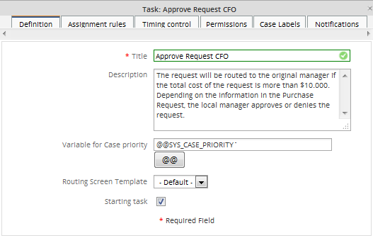
- Title: The title or label of a task, which is displayed on the Process Map. This field is a short description of the task. This text will show up in the Process Map, so it should be kept short, yet descriptive.
- Description: The description for a task. This description is displayed when the user clicks on the "INFORMATION" tab when running a case and then clicks on the "Task Information" button in the dialog box which appears on the left hand side. This field provides useful information to the user in charge of starting a new task instance, namely a new activity. Note that you can use the embedded HTML editor to provide rich formatting to this content.
- Case Priority: A variable or fixed integer which determines the priority of a task. The priority of a case can be between 1 and 5:
- 5 Very High
- 4 High
- 3 Normal
- 2 Low
- 1 Very Low
- By default, the priority of cases is determined by a system variable named
@@SYS_CASE_PRIORITY, which has a default value of 3 (Normal priority), but that value can be changed by setting the value of@@SYS_CASE_PRIORITYin a trigger (or in a DynaForm field named "SYS_CASE_PRIORITY"). However, the case priority can be determined by a custom case variable. For instance, the case variable @@approvalTaskPriority could be used and its value could be set in a trigger which examines the case data and determines the appropriate value. Likewise, its value could be set in a DynaForm dropdown box named "approvalTaskPriority" which allows the user to select the appropriate priority. If cases at this task should always have a fixed priority, then enter an integer between 1 and 5. - The cases in the Inbox list are ordered by their priority, so priority 1 cases appear at the top of the list and priority 5 cases appear at the bottom.
- Starting Task: Check to make the task the start of the process. A process can have multiple starting tasks.
- Routing Screen Template: users can personalize the default template (as the image below) to show a new one on the derivation screen for a particular task. Each task might have its own routing screen template.
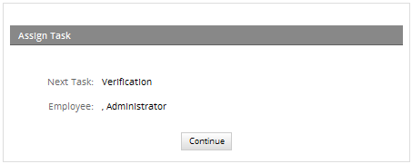
It can be used also for a whole process. If user doesn't need no know which will be the next user assigned for the task, this template can be customized using ProcessMaker file called cases_ScreenDerivation.html located on:
It's important to use the same variables of the file in order to keep the structure of the template.
Task Designation Rules
Although a task can be assigned to multiple users or groups of users, only one user out of the pool of assigned users can be designated to work on a task at a time. Designation rules (which used to be known as Assignment Rules) determine which user from the pool of assigned users is given the authority to work on a task in a case. There are five options for Designation Rules: Cyclical Assignment, Manual Assignment, Value Based Assignment, Reports To, and Self Service.
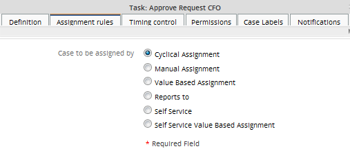
Once ProcessMaker designates a user to work on a task in a case, case will appear in the user's Inbox list (formerly named To Do) under the CASES menu. That user will stay the designated user until the task is completed or the case is canceled or deleted.
Note: Designation Rules have no effect on the initial task in a process, because whoever initiates the new case will automatically be designated to work on the first task in the process.
Cyclical Assignment
Cyclical Assignment is the default type of assignment, where the task is assigned in a particular user by selecting that user from the pool of available users in a round-robin manner.
For instance if there are three users named "Sally", "Jane", and "Anne" assigned to a task, then the users will be designated to work on cases in the following manner:
ProcessMaker cycles through the pool of available users, assigning each one of them in order, until it has run through the entire pool of users, then it starts the cycle over. This option should assure that all the users get assigned to an equal number of cases, However, ProcessMaker makes no attempt to check the workload of a particular user or how many cases that user has pending. If a user is out of the office or has hundreds of uncompleted cases, ProcessMaker will continue assigning cases to that user.
Note: To stop a user from being assigned to cases, change that user's status to INACTIVE.
Note: Users who have been set as "On Vacation" have the ability to be assigned to tasks. Nevertheless, they won't be assigned to running cases until they log in again in this type of assignment.
Manual Assignment
With manual assignment, the user who completes the previous task in the process will manually select the user to work on the next task in the process. After completing the previous task, the user will be presented with a list of all the assigned users to the next task and will be asked to chose one to work on the next task.
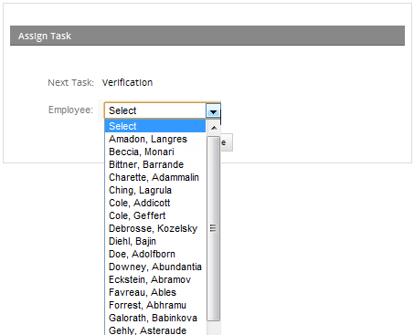
Value Based Assignment
Value Based Assignment allows a variable to specify which user will be given authority to work on a task. The variable can be set in the Variable for Value Based Assignment textbox which appears when the option is selected. By default, the variable is @@SYS_NEXT_USER_TO_BE_ASSIGNED, whose value should be set to the UID (Unique ID) of the next user to be assigned to the task.
The value of @SYS_NEXT_USER_TO_BE_ASSIGNED can be set in a trigger, which should be set to fire at some time before task assignment. A custom variable could also be used. For instance, if you want different users to handle a task, depending upon the amount of money involved in the case, you could define a custom variable @@NextUser to enter in the Variable for Value Based Assignment field. For instance, if you have a local manager who handles minor expenditures below $1000 and a regional manager who handles major expenditures over $1000, this trigger code could examine the amount of money involved, and then decide which user handles the task:
if(@@Amount < 1000 )
$NextUsername = 'annsmith'; //the local manager
else
$NextUsername = 'tedjones'; //the regional manager
#look up the UID for the $NextUsername in ProcessMaker's MySQL database:
$query = executeQuery("select USR_UID from USERS where USR_USERNAME='$NextUsername'");
@@NextUser = $query[1]['USR_UID'];
Value Based Assignment can be useful if the same user needs to work on a task repeatedly. For example, imagine a process contains a task where an employee fills out a report. If that report is sent back to the same task for revision, the same employee who initially filled out the report should be assigned to the task again. Set the task to use Value Based Assignment using the case variable @@NextUser. The first time the task is executed the currently logged-in user will be assigned to the task, which can be determined from the system variable @@USER_LOGGED. All subsequent times, the task will still be assigned to the same user. Here is the trigger code which would be fired before task assignment:
If the next user to work on the task needs to be randomly assigned from the pool of assigned users, then the following trigger code could be used instead:
//To find it, use the following search: SELECT CON_ID FROM CONTENT WHERE CON_CATEGORY='TAS_TITLE'
$taskId = "XXXXXXXXXXXXXXXXXXXXXXXXXXXx";
//if first pass through task:
if (!isset(@@NextAssignedUser)) {
//look up all the assigned users to the the task in the database:
$aUsers = executeQuery("SELECT USR_UID FROM TASK_USER WHERE TAS_UID='$taskId' AND TU_TYPE='1'");
//get random number to select the user:
$noUser = rand(1, count($aUsers));
@@NextAssignedUser = $aUsers[$noUser]['USR_UID'];
}
Reports To
The Reports To assignment rule takes into account your organization's structure (organigram) as represented by ProcessMaker Departments. It selects the supervisor/manager of the user who completed the previous task in the process to work on the current task. This is a useful option when the process requires that the supervisor review the work of the people in his/her department. If a supervisor for a sub-department completes the previous task, then Reports To will select the supervisor in the parent department to work on the current task. In this way, tasks can be passed up the chain of command in an organization.
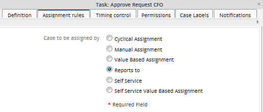
The Reports To assignment rule is useful when a task can be worked on by a large pool of supervisors. For example, a complex organization wants to use the Expense Report Process , but that organization has 100 employees from 10 different departments who can report the expenses that they incurred on the job.
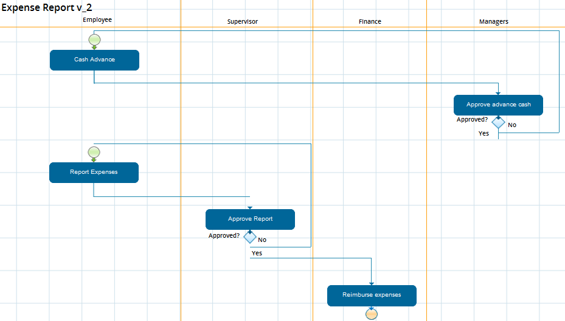
The problem is there are 100 employees who are assigned to the "Report Expenses" task and 10 different supervisors assigned to the "Approve Report" task. The supervisor of the employee who initially reports the expense should be the person who reviews it and decides whether to approve or disapprove the expense. In order for the correct supervisor to review the expenses from his/her department, use the Reports To assignment rule for the "Approve Expense" task.
Before using a Reports To assignment rule, first go to USERS > DEPARTMENTS and create the departments and sub-departments for your organization. Once the organizational structure is defined, then click on the [Edit] link for each department and click on Assign users to select the users who will be members of that department. Then, select which member will be theSupervisor/Manager for the department. (The supervisor/manager can also be selected for a particular user by going to USERS > USERS LIST, clicking on the Edit link for that user, and selecting from the Reports To dropdown box.)
Make sure that every user assigned to the previous task is a member of a department or has selected a supervisor/manager in the Reports To field in his/her user profile. If the user who worked on the previous task does NOT have a supervisor/manager, then the message "The current user does not have a valid Reports To user." will appear when routing the case.
According to previous explanation, if in a derivation, the top level of a department has been reached, it means if the supervisor doesn't have another "supervisor" to report the case, reports to assignment rule will be applied assigning the next task to the same user. This validation was added from version 2.5.
Self Service
A Self Service assignment rule allows any user from the pool of assigned users to grab the case and work on the task. In other words, the user will have the power to assign himself/herself to the task. Self Service can be used to reduce congestion in the workflow, especially when the users can best judge their capacity to take on new cases.
When a case is routed to a task with a Self Service assignment rule, then the status of the case will be listed as "Unassigned":

The case will then appear in the "Unassigned" list of cases for all the users who have been assigned to the task.

Any user in the pool of assigned users can examine the case by clicking on View to see the details of the case. To assign himself/herself to work on the case, click on "Claim this case".
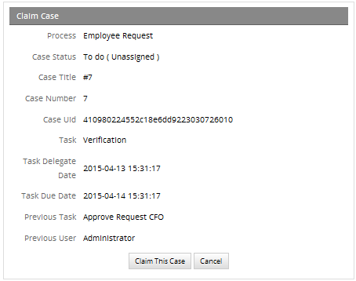
The case will then be moved to the Inbox of that user to be worked on and will disappear from the Unassigned list for all other users in the pool of assigned users.
The Credit Card Application process is a good example of how Self Service assignment can be effectively used.
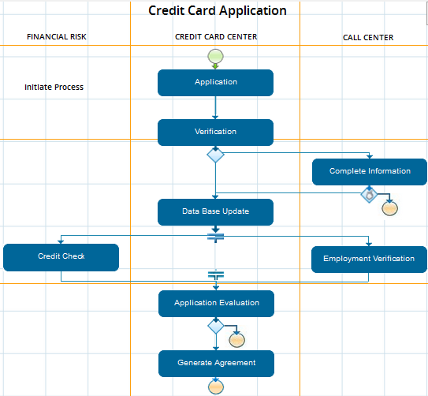
Normally, the "Data Base Update" task is handled by Cyclical assignment, but Self Service assignment is more efficient and productive, because any of the assigned users who is currently working can then enter the credit card application into the database. This avoids untimely delays, because it is no longer necessary to wait until a particular employee comes to work. Furthermore, the employees at work can best judge whether they are free to handle the "Data Base Update" task at any particular time.
Setting time limit to claim a case
Available Version: From 2.5 on.
As it is explained before, when a case use Self Service assignment rule, any user from the pool who is assigned in the task with this rule defined could claim the case, on previous versions if nobody claims the case it will remain on the unassigned folder forgotten by users or even users may not know that they have a case to claim.
To avoid this conflict, a time limit was added, which allows users the possibility to configure time the case will be remain on the unassigned folder, if that time is surpassed, a Trigger will be executed automatically, for instance that trigger could send a notification which would indicate there is a case to claim, it could derive the case, etc. The trigger will execute while the case remains in the unassigned folder; configure the trigger if it requires to be executed only once.
When Self Service option is chosen inside Assignment Rules a new option will be enabled:
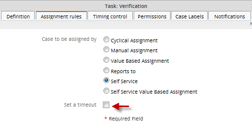
Set a Timeout option is enabled, as this option is optional, user may select this in case a time need to be configure for claiming the case. When this option is selected, parameters to set time are displayed:

Where:
- Time: Required Field. Time elapsed since to case is derived and sent to unassigned folder. It is not possible to use decimal numbers.
- Time Unit: Time unit expressed in hours and minutes.
- Trigger to execute: Required Field. Choose the trigger which will be fired. If this trigger will send a notification, don't forget to enable email notifications to have notifications working properly. In order to send notifications at the correct timing, the server running ProcessMaker will have to be configured to execute a
Scheduled Taskif using Windows or a cron job if using Linux/UNIX.
- Execute Trigger It indicates if the trigger will be executed Once or Every time scheduled by cron
- Once It doesn't matter the content of the trigger, it will be executed just once. Available Version: From 2.8
- Every time scheduled by cronThe trigger will be executed depending on the cron configuration. Available Version: From 2.8
Self Service Value Based Assignment
Available Version: From 2.5 on.
Although, self service routing rule allows any user assigned in the task to claim a case, it is limited if users assigned to a specific group are required to claim a case. This new routing rule allows the use of a variable to dynamically assign the case to a pool of users assigned to a group, it means that self service will derivate the case to all users assigned into a specific group.
When choosing the routing rule a new option will display:
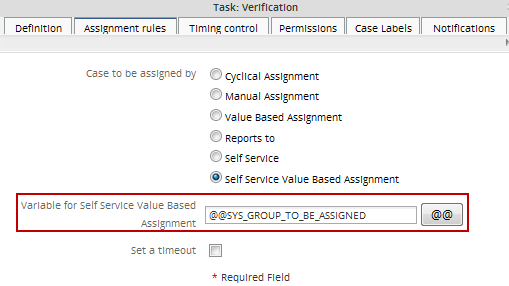
Then, enter the name of a variable which will contain a group's unique ID. Note that one group may be specified in the variable. The group ID can be found by using the following query in the wf_<WORKSPACE> database (which is named wf_workflow by default):
To search for a group named "Employees":
The variable can be set by a field in a DynaForm or by a Trigger in a prior task. If using a variable defined in a trigger, make sure that the trigger is set to fire Before Assignment in the previous task or at some earlier point. If it fires Before Routing or After Routing in the previous task, then the variable won't be set in time.
The value of @@SYS_GROUP_TO_BE_ASSIGNED can be set in a trigger, which should be set to fire at some time before task assignment. A custom variable could also be used. For instance, if it is required to derivate case to a specific group of users depending of a condition, in the case of the example below, the amount of a credit desired, a custom variable named @@Groups could be entered in the Variable for Self Service Value Based Assignment field.
Example setting the group with a dropdown box
To select a group in a DynaForm, whose users will be able to claim a case whose task uses Self Service Value Based Assignement, first create a DynaForm in the previous task which contains a dropdown box named Groups where available groups will be listed using a query to the current workflow database:
<en>Select a Group</en>
</Groups>
Then, set the Self Service Value Based Assignment routing rule, using @@Groups the case variables, so when a group is selected from the dropdown, the routed case will appear underUnassigned in the HOME menu of the users in the group, so that one of them can claim it.

Example setting the group with a trigger
To set the group in a trigger, create a trigger which is set to fire before assignment in the previous task. In this example, when the group will be selected based upon the quantity which was entered in a currency field named "CREDIT_LIMIT". If the amount is less than 1000, the case can be claimed by members of a group named 'Credit'. If 1000 or greater, the case can be claimed by members of another group named 'Administration':
$Group = 'Credit';
else
$Group = 'Administration';
$result = executeQuery("select CON_ID from CONTENT where CON_CATEGORY='GRP_TITLE' and CON_VALUE='$Group'");
if(is_array($result) and count($result) > 0){
@@Groups = $result[1]['CON_ID'];
}
else{
$g = new G();
$g->SendMessageText("Unable to find group '$group' in the database.", "ERROR");
}
Task Timing Controls
The Timing Control is used to set the task due date, which is the amount of time allowed to complete the task.

- Allow user defined timing control: In version 2.0 and later, a new option is available: Allow user defined timing control. This option allows the user assigned for an specific task to manually set the timing control when a case is routed. Mark this checkbox to make all the options below disappear:
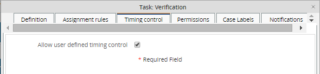
- Task duration: Enter an integer which is the duration of the task. Negative and decimal numbers are not allowed.
- Unit time: The time units used to calculate the due date, which can be hours or days.
- Days to enter: Select whether the due date is calculated using work days or calendar days. If work days, then time is counted from Monday through Friday, 9am to 5pm. If calendar days, then time is counted according to the user's calendar. If the user doesn't have a selected calendar, then time is counted 24 hours per day, 7 days a week.
If the time to complete a task has already passed, the case will be displayed with the "Due Date" in red in the TO DO and DRAFTS folder under the HOME menu. The red due date will alert the user scanning the list that this case is overdue and needs to be handled promptly.
Note: The due date is calculated when the case routes to another task in the process or when the case is unpaused or reassigned to another user.
Example
Create a Case with 2 tasks, on the properties of the second task check the option Allow user defined timing control then start the case, when the task 1 is derived into task 2, below the routing screen will appear the parameters for the Timing Control:

Task Permissions
This task property will enable Allow arbitrary transfer (Ad hoc) and it will allow the users of the task to transfer it to users chosen in the Users & User Groups (Ad hoc).

As an example to use this property in a task we will enable this property. Then we can create a user in Users & User Groups (Ad hoc):
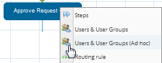
When running the case the user assigned to the task can reassign by clicking in "Actions" and in the actions menu in Adhoc Assignment, where a dialog with a list of the Users & User Groups (Ad hoc). We can see this in the illustration.

Double-click on the name of the user or just click on Assign to the current task to that user:
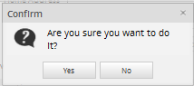
Task Case Labels
By default cases are labeled according to their case number, which can make them difficult to identify when looking at a list of cases. Users scanning the list will not know which cases to work on when they have titles such as "#1", "#2", "#3", etc. The Case Title and Case Description can be customized to provide more better information about the case.
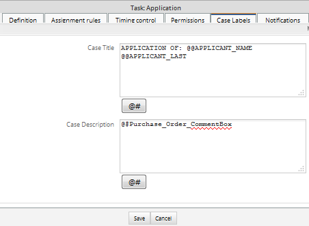
There are two fields for this property:
Case Title
In this field the user can assign names to the cases. In the name we can insert variables. Use the [ @# ] button to view what variables are available and insert them in the expression.
Add the case Title as follows:

It can be seen by entering to the Inbox, Draft, Participated list on HOME:
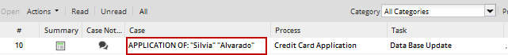
From version 2.8 it is possible to add special characters to the title of the case such as &, [, ], {, }, *, etc.
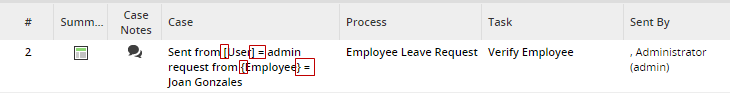
Case Description
In this field the user can write a description for the case, and it can be as descriptive as needed. Use the [ @@ ] button to view what variables are available and insert them in the expression
Note: Case Description property is not used until version 2.0.43 used, instead of that it's possible to use Case Notes.
Update from version 2.0.44
Form Version 2.0.44 Case description is included on the Summary of the case, it can be seen in the following image:
Creating the Case Description:
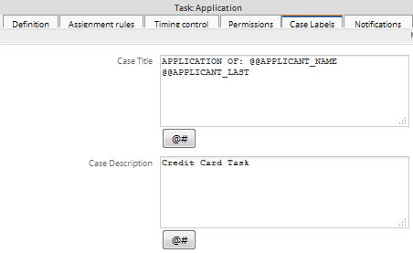
Viewing the case description o the case summary

Task Notifications
This task property is used to send an email notification to the next assigned user in the case. Make sure that ProcessMaker is configured to use an email server. For more information, see Notifications.
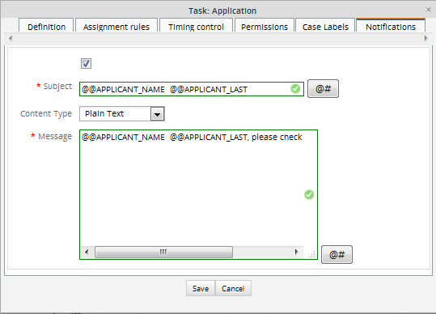
- To enable email notifications, when a user is assigned to work on the current task in a case, check the option: After routing notify the next assigned user(s).
- Once notifications are enabled, complete the following fields:
Subject: Include the subject of the notification, use the [@#] button to view what variables are available and insert them in the text, system and case variables can be inserted into the text.
Content Type: Choose the content type either Plain Text or HTML template may be used.
Message: Include the body of the message without using code. If HTML template is chosen, a new field will display where template must be selected.
Note: If using the task has a self-service designation rule, then no email notification will be sent out until a user claims the case. To send a notification to all users who are available to claim the case, see Emailing all Assigned Users for a Task.
Note: From version 2.0.45 it is possible to send notifications to a task which has a self-service designation rule. Email will be sent to all assigned users to that task.
Assigning Users to Tasks
After creating tasks for a process, user(s) and/or user group(s) need to be assigned to those tasks. See Managing Users for more information about creating users and groups.
Assigning Users and User Groups
People who are assigned to a task will be given access to the case and the power to complete the steps in the task. Their access to information about the case can be limited. For managers who want to review cases, it is better to assign them as Supervisors to the case.
A task can be assigned to individual user(s) and/or group(s) of users. If assigned to a group, anyone in that group can complete the task. If more than one user is assigned to a task, the task will be passed between the available users until someone completes it. See Configuring Task Assignment.
Generally it is better to assign tasks to groups rather than individual users, even if there is only one user in the group. The user assignments will be lost whenever a process is exported, but the group assignments aren't lost. After importing a process, it is easier to assign users to groups in ProcessMaker, rather than having to go through all the tasks, manually assigning users. For instance, if your organization has a chief financial officer named Sally Barnes, then create a group called "Chief Financial Officer" and assign Sally Barnes as its member. If the chief financial officer for your organization changes or you need to export all your processes to another server, all you will need to do afterwards is assign a user to the group "Chief Financial Officer", rather than reedit all your processes.
To assign user(s) and/or group(s) to a task, right click on the task in the Process Map and select the option Users & User Groups from the menu. In the dialog box which appears, click theAssign link to open another dialog box which lists the available users and groups. Groups are listed first and show in parenthesis the number of members in the group. To search for a user or group, type part of their name in the Search box and press ENTER. (Note that the search is case insensitive and can not include wildcard characters.) After a search, return to the full list of available users and groups by clearing the Search box and pressing ENTER. Once the desired user or group is found, click on Assign.
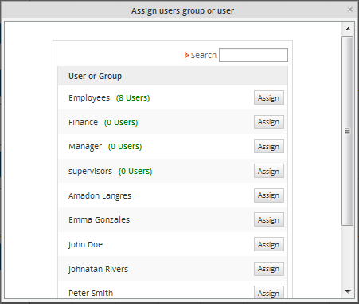
Note: If for some reason a user needs to be added into a user group already assigned in a task, this user group doesn't need to be assigned into the it again, the information will refresh automatically.
Assign Users and User Groups (Ad-hoc)
Ad hoc assignment of users/groups to tasks makes those users/groups available to be reassigned to the task, but these users/groups are not assigned by default to the task when it starts. Ad hoc users can be manually reassigned to the task by users who
- Have the PM_REASSIGNCASE permission in their role
- Process Permissions to open the case.
- Have a Process Supervisor permission to manage cases. Available from version 2.5
Ad hoc assignment can be useful in a number of situations. For example:
- There are temporary or part time employees that are not always available to work on the task, so they should only be assigned to the task when available. A manager or the normally assigned users could reassign the case to the temporary employee when at work.
- The workload for employees often changes, so a manager needs to decide which employees are best able to handle the cases. The task is assigned to the manager by default and he/she then looks at the workload and reassigns the case to one on the employees who have ad hoc assignment to the task.
- The normally assigned users generally handle the task, but there may be special cases which can only be handled by a manager. Do an ad hoc assignment of the manager to the task and give all the normally assigned users the PM_REASSSIGNCASE permission. When a special case arises, they can reassign the case to the manager to handle it.
Ad hoc assignment can also be used for automatic review of the task by another user after it has been completed by the normally assigned user.
Assigning Users or Groups to a Task
To assign users or groups to a task on an ad hoc basis, right click on the task and select the option Users & User Groups (Ad hoc) from the menu. Then select which users and/or groups will have ad hoc assignment to the task.
Note: Don't forget that a user must be assigned to the task where the ad-hoc assignment will apply, since this user will be the one who will receive and reassign the case to the task where the ad-hoc users are assigned.
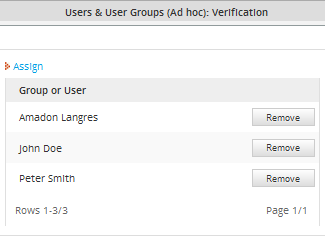
Giving a task the Ad Hoc assignment
Give the task reviewer ad hoc assignment to the task, then right click on the task and select the Task properties option from the dropdown menu. In the "Tasks:" dialog box, under thePermissions tab, mark the Allow arbitrary transfer (Ad hoc) option.

Executing a Case
During the execution of a case and in the task where the Ad Hoc assignment was set go to Actions Menu and choose the option Ad Hoc Assignment:
Choose one user from the list and click on Assign. After the normally assigned user completes the task, the case will automatically be reassigned to one of the ad hoc users to review the steps in the task and verify that it was done correctly.
Assigning Steps to Tasks
In ProcessMaker a step is a piece of work that forms a clearly defined action within a task. A step can be a manual action such as filling out a DynaForm or uploading a Word document to use as an Input Document, or it can be workflow action which is automated. There are 4 types of steps in ProcessMaker: DynaForms, Input Documents, Output Documents and Triggers.
Defining Steps
To view the steps assigned to a task, right click on the step in the ProcessMap and select Steps from the menu:
.png)
In the Steps Of: TASK_NAME dialog box which appears, a list of the steps in the task will be displayed. The steps will be executed in the order which they are displayed.
Adding Steps
To add a new step to a task, click New at the top of the list. If you want the step to be a DynaForm, Input or Output Document, you will have to have already created it previously. Choose it from the list of available DynaForms, Input and Output Documents and click its Select link to add it as a task. If the step is a DynaForm, there is a dropdown box to select whether the form is view-only or whether the user can enter data into form.
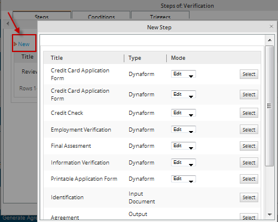
Dynaforms can be added as edit or view mode. If they are added as edit mode, all fields created will be able to be written, whereas adding a Dyanform in view mode will turn all the elements in view mode without the possibility to modify the information in it. This last is very helpful if a Dynaform only needs to be checked by a supervisor or a chief, but you have to be careful some buttons were added in the Dynaform, they have a special behavior depending on the button type. Check this documentation to see the difference amongst button, reset and submit button fields
Click the Up and Down links to change the order of the steps. To remove the step from the task, click the Remove link. If the step is an editable object such as a DynaForm, then an Editlink will also be displayed next to the step, allowing the object to be edited.
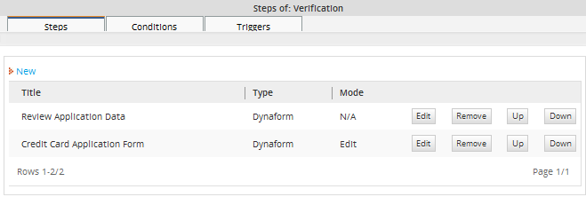
Mode column was added from version 2.5, which indicates if the DynaForm was added as "Edit" or "View" Mode, in the case of Input and Output Documents mode column will be set as "N/A".

Defining Conditions
A condition for each step can also be defined, which is a PHP expression. The step will only be executed if the condition evaluates to "True". Remember that in PHP, an expression is True if evaluates to a non-zero value, so -10, 10.23, "10", and "hello" are all True; while "", 0, and "0" are all False. Variables can be used in the expression, allowing the process to check different factors when deciding whether to execute a step or not. For more information, see Using Conditions.
To add a condition to a step, go to the Conditions tab in the "Steps Of:" dialog box and click the Edit link next to a step. In the dialog box, enter the PHP expression. Use the [ @@ ] button to view what variables are available and insert them in the expression. Then click Save to add the condition.
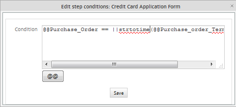
Complex conditions can be constructed using Boolean operators (and, &&, or, ||) and parentheses ( ) to group conditions. In the example above, an input document is only required if the no comment was provided in the DynaForm or if the shipping date is before the present date, which is obtained with the date("Y-m-d") function. The strtotime() function converts a string to a date, so that it is possible to compare the two dates and determine which is earlier.
Adding Triggers
If you want the new step to be trigger, click on the Triggers tab in the 'Steps Of:' dialog box. There will be an option to add the triggers before and after each DynaForm, and Input and Output Document is executed as a step in the task. If a particular variable needs to be defined by a trigger to be used in a DynaForm or document, then fire the trigger before executing the step. If a variable is defined in a DynaForm or document which will be used in a trigger, then fire the trigger after executing the step.
In addition, triggers can be fired before the assignment of the task to a user or group. If the trigger will define a variable which determines who will be assigned the task, insert the trigger before assignment of the task. Likewise triggers can be fired after a task has been completed. The trigger can be executed either before or after the routing rule (derivation rule) is applied to move to the next task in the process.
Click on the [+] next to the step to view its triggers. Before adding a trigger to a step, you will first need to have created the trigger. See the Triggers section for information on how to create triggers. To add a trigger to the step, decide whether when it should be executed and click on [+] next to the desired timing. In the expanded panel for a particular timing, click on Add.

In the dialog box which appears, select an available trigger from the dropdown box. A condition can also be added to determine whether the trigger should fire or not. Then click Assign to add the trigger to the step.
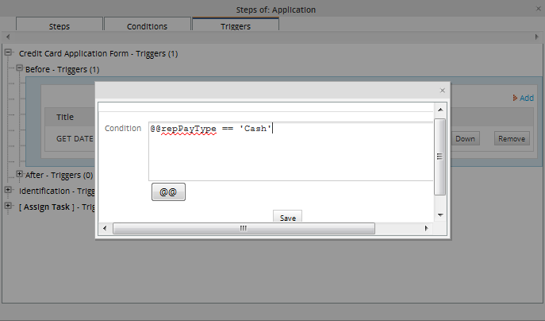